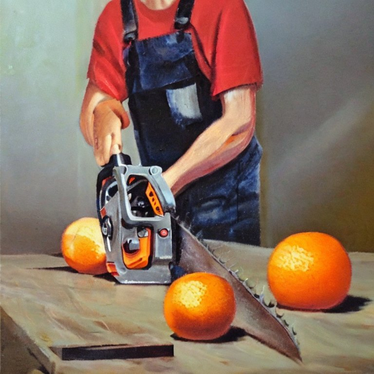

Why Should Data Scientists Learn Kubernetes?
For the uninitiated Kubernetes, also known as K8s, is “an open-source system for automating deployment, scaling, and management of containerized applications.”
I agree with Chip Huyen that Data Scientists shouldn’t need to learn K8s. However, the cold truth is: Even though you shouldn’t have to, you should anyway! Even Vicki Boykis seems to agree1:

Below, I outline reasons why I think learning K8s is a good idea for data scientists2. But if you are already convinced, feel free to jump ahead and read about my free course: K8s For Data Scientists.
Managed services are not always an option

Major clouds offer some data science infrastructure as managed services, but it usually doesn’t cover everything you need. There are many popular open source infrastructure tools which data scienists consider to be staples or must-haves in their workflow. For example, many clouds offer only limited or no managed services for things like:
- Airflow
- JupyterHub
- ML workflow and experiment tracking systems. 3
- Dask
- etc.
There is often a gap between cloud offerings and the needs of data science teams, which are often filled by open-source tools. When open source isn’t enough, third party vendors are happy to install their software on your cloud. However, you often need basic infrastructure skills to enable either of these things. These skills often intersect with Kubernetes.
Nobody is coming to save you

A typical first experience as a data scientist or machine learning professional is that you don’t have the necessary tools to get started. This is incredibly frustrating, as making progress without the proper tools can be hard. This experience usually culminates in a conversation like this:
Data Scientist: I’m excited to join ACME company! You’ve hired me to optimize marketing spend with predictive models. The issue is that we don’t have the basic infrastructure or tools are necessary for me to work efficiently.
Manager: I’m confused. Can’t you install the tools you need? Isn’t that what you are for? I was expecting that you would figure it out.
Data Scientist: No, I don’t know how to setup and deploy infrastructure. We need a special infrastructure or DevOps person for that.
Manager: It will be hard to ask for more resources if we don’t know the expected return on investment. Can you do the ML project first, demonstrate some value, and then we can invest in infrastructure?
Data Scientist: I need some minimum tools to allow me to more quickly experiment and develop proof of concepts. Also, I need tools that might help me collaborate better with my team…
… At this point, the Manager and the Data Scientist are stuck debating the chicken and the egg problem. This impasse leads to career dissatisfaction and stagnation.
By learning basic infra skills, you can unblock yourself and your team in many cases!
Helm Charts are like an OSS app store

Helm is a package mansger for K8s. It allows you to install a wide variety of software in the cloud quickly. Sure, you can install software on your laptop, but the whole point of many data science tools is to enable better collaboration with your team. To properly evaluate these tools, you will want to install them in an environment that your whole team can observe and interact with.
You can install many data science tools with Helm:
- Airflow: https://airflow.apache.org/docs/helm-chart/stable/index.html
- Dask: https://docs.dask.org/en/stable/deploying-kubernetes-helm.html
- JuptyerHub: https://z2jh.jupyter.org/en/stable/jupyterhub/installation.html
- Metaflow: https://github.com/outerbounds/metaflow-tools#metaflow-services-on-kubernetes-k8s
- Prefect: https://github.com/PrefectHQ/prefect-helm
- ElasaticSearch: https://github.com/elastic/helm-charts
You don’t need to become an expert in K8s to deploy and perform basic configuration of these tools. You might need deeper exercise to maintain them over a long period; however, you can get quite far with basic knowledge of K8s.
ML research is crowded. Compete on SWE skills.

One of the best ways to set yourself apart as a data scientist is through your skills. Traditional education often emphasizes learning the latest ML techniques. However, cutting-edge ML research is very competitive. It also moves incredibly fast! In the last six months, we have seen Stable Diffusion and ChatGPT, with more to come. It’s also an extremely crowded space.
In my experience, the bottleneck many teams face is not a lack of knowledge of cutting-edge ML techniques, but software engineering skills and partners to help operationalize models. If you take some time to learn how to stand up tools and infrastructure, you will be invaluable to your team.
Your company likely already runs K8s

I believe that data scientists should have tools that meet them where they are. An example of an anti-pattern of failing to meet data scientists where they are is not allowing development in Jupyter Notebooks.
By deploying and exploring tools in K8s you increase the likelihood that:
- Your DevOps counterparts will feel comfortable with the tools you want to deploy
- You will have a shared language in which to talk to your application administrators
- You will be more likely to attract people to help you with infra
- You will look smart for leveraging technology that’s (likely) already adopted
These factors make it much more likely that you will get the tools that meet you where you are as opposed to something a software engineer without any data science experience thinks is a good idea (which I’ve seen happen a lot!)
Even if your company doesn’t run K8s, you can recruit generalists that can administer K8s for you, as opposed to trying to find a unicorn that specializes in ML Infrastructure.
But isn’t it overkill?

For simple apps that you want to stand up quickly or prototype, K8s is likely overkill. Instead, I’m advocating knowledge of K8s as useful when working within the typical constraints and environments in many companies. For example, if you want to deploy production software, hosting your data product on a single VM is often insufficient. Many companies even have infrastructure that may block you from doing this with paved paths that only include Kubernetes.
Even if you are not deploying any production software, K8s can be invaluable in allowing you to deploy the tools you need.
You don’t need to become an expert

K8s are complicated, but you don’t need to become an expert to unlock tons of value as a Data Scientist. I would focus on three capabilities:
- Deploying tools/infra you need (with the help of managed cloud services)
- Basic debugging
- Familiarity with high-level concepts
Furthermore, I’m not suggesting that data scientists become K8s administrators. That is a very involved task and worthy of its own role. However, we can use managed cloud services and some basic knowledge to get far. That’s why I’m teaching a course on this topic: Kubernetes for Data Scientists.
Course: K8s for Data Scientists
TODO
Footnotes
Vicki is a champion of data scientists on the ground. Her views resonate with people in the industry, especially those outside Silicon Valley, about the realities of being a data scientist. She is not someone who is impressed by flashy or new technologies and is someone who takes a pragmatic approach to get the job done. When she says you should learn K8s, you should pay attention!↩︎
Each subsection of this article has a picture that has been generated by Stable diffusion with a prompt that very similar to the image caption.↩︎
Major cloud providers do have managed workflow systems (AWS - Sagemaker, Azure - AzureML, GCP - VertexAI), but these may not fit your needs.↩︎